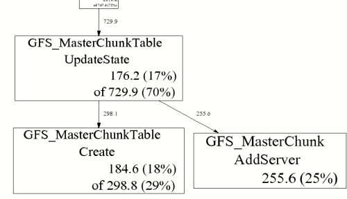
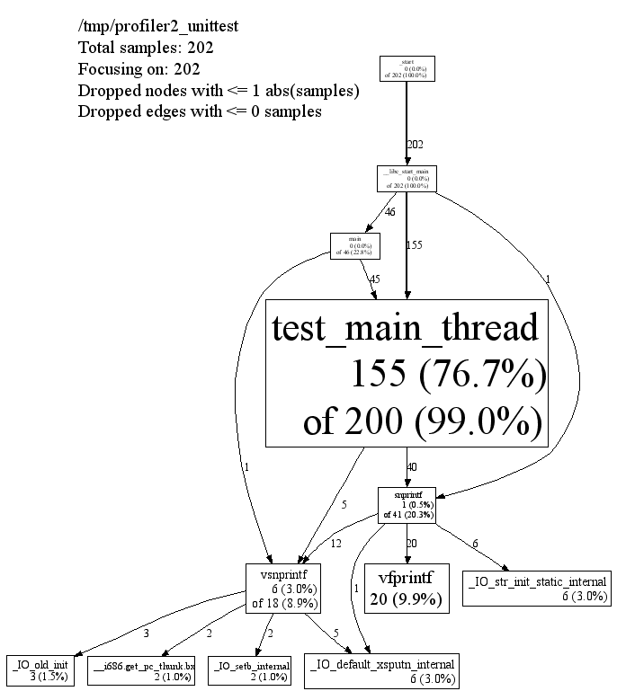

gperftools
Table of Contents
1 gperftools
1.1 tcmalloc
see TCMalloc
1.2 heap checker
http://gperftools.googlecode.com/svn/trunk/doc/heap_checker.html
这个组件是用来检查内存泄漏的，这里 还有一个google的组件也是做类似事情。
note(dirlt): 没有继续研究下去. 因为没有成功运行测试程序。并且程序最后还一直hang着不退出。
➜ ~ g++ main.cc -ltcmalloc_and_profiler ➜ ~ HEAPCHECK=normal ./a.out WARNING: Perftools heap leak checker is active -- Performance may suffer (nil), -1243309312 Check failed: !do_main_heap_check: should have done it
1.3 heap profiler
http://gperftools.googlecode.com/svn/trunk/doc/heapprofile.html
This is the heap profiler we use at Google, to explore how C++ programs manage memory. This facility can be useful for
- Figuring out what is in the program heap at any given time
- Locating memory leaks
- Finding places that do a lot of allocation
The profiling system instruments all allocations and frees. It keeps track of various pieces of information per allocation site. An allocation site is defined as the active stack trace at the call to malloc, calloc, realloc, or, new.（定位程序在哪些地方分配了内存以及分配多少内存，当然也可以用作检测内存泄漏）
有两种调用方式：
- 环境变量 HEAPPROFILE=<profile-path> ./a.out
- 函数API functions in <gperftools/heap-profiler.h> (HeapProfilerStart, HeapProfilerStop etc)
下面是一些控制行为的环境变量. 分配量超过某个阈值/使用量超过某个阈值/定时器都会触发dump.
| env | default | comment |
|---|---|---|
| HEAP_PROFILE_ALLOCATION_INTERVAL | default: 1073741824 (1 Gb) | Dump heap profiling information each time the specified number of bytes has been allocated by the program. |
| HEAP_PROFILE_INUSE_INTERVAL | default: 104857600 (100 Mb) | Dump heap profiling information whenever the high-water memory usage mark increases by the specified number of bytes. |
| HEAP_PROFILE_TIME_INTERVAL | default: 104857600 (100 Mb) | Dump heap profiling information each time the specified number of seconds has elapsed. |
| HEAP_PROFILE_MMAP | default: false | Profile mmap, mremap and sbrk calls in addition to malloc, calloc, realloc, and new. |
| HEAP_PROFILE_ONLY_MMAP | default: false | Only profile mmap, mremap, and sbrk calls; do not profile malloc, calloc, realloc, or new. |
| HEAP_PROFILE_MMAP_LOG | default: false | Log mmap/munmap calls. |
输出会有一系列的profile文件比如
/tmp/profile.0001.heap /tmp/profile.0002.heap ... /tmp/profile.0100.heap
可以挑选其中一个来看.也可以挑选其中两个比如A,B, 将B作为base(–base=), 然后从A中减去B得到的profile.
下面是一个图形输出样例

A few explanations:
- GFS_MasterChunk::AddServer accounts for 255.6 MB of the live memory, which is 25% of the total live memory.
- GFS_MasterChunkTable::UpdateState is directly accountable for 176.2 MB of the live memory (i.e., it directly allocated 176.2 MB that has not been freed yet). Furthermore, it and its callees are responsible for 729.9 MB. The labels on the outgoing edges give a good indication of the amount allocated by each callee.
下面是一个文字输出样例
% pprof --text gfs_master /tmp/profile.0100.heap
255.6 24.7% 24.7% 255.6 24.7% GFS_MasterChunk::AddServer
184.6 17.8% 42.5% 298.8 28.8% GFS_MasterChunkTable::Create
176.2 17.0% 59.5% 729.9 70.5% GFS_MasterChunkTable::UpdateState
169.8 16.4% 75.9% 169.8 16.4% PendingClone::PendingClone
76.3 7.4% 83.3% 76.3 7.4% __default_alloc_template::_S_chunk_alloc
49.5 4.8% 88.0% 49.5 4.8% hashtable::resize
...
- The first column contains the direct memory use in MB.
- The fourth column contains memory use by the procedure and all of its callees.
- The second and fifth columns are just percentage representations of the numbers in the first and fourth columns.
- The third column is a cumulative sum of the second column (i.e., the kth entry in the third column is the sum of the first k entries in the second column.)
在Caveats小节里面有一些使用heap-profiler需要注意的问题，我觉得有两个需要比较重要：
- If the program linked in a library that was not compiled with enough symbolic information, all samples associated with the library may be charged to the last symbol found in the program before the library. This will artificially inflate the count for that symbol.
- Several libraries, such as some STL implementations, do their own memory management. This may cause strange profiling results. We have code in libtcmalloc to cause STL to use tcmalloc for memory management (which in our tests is better than STL's internal management), though it only works for some STL implementations.
1.4 cpu profiler
http://gperftools.googlecode.com/svn/trunk/doc/cpuprofile.html
note(dirlt): 这个组件值得好好研究一下. 这里有profile文件输出格式 http://gperftools.googlecode.com/svn/trunk/doc/cpuprofile-fileformat.html heap-profiler用的应该也是这个格式
有三种调用方式：
- CPUPROFILE=<profile-path> ./a.out
- CPUPROFILE=<profile-path> CPUPROFILESIGNAL=12 ./a.out & 然后使用kill -12 <pid>来启动profiler, 之后使用kill -12 <pid>来关闭profiler
- functions in <gperftools/profiler.h> (ProfilerStart, ProfilerStop etc)
可以通过环境变量 CPUPROFILE_FREQUENCY = x(default = 100) 来控制采样率。默认是100次/s.
最终展现方式有三种：1) text 2) graph 3) callgrind. 下面是文本输出例子
14 2.1% 17.2% 58 8.7% std::_Rb_tree::find
每个字段含义分别是：（其中第三个字段含义和heap-profiler文本输出中第三个字段含义是相同的）
- Number of profiling samples in this function
- Percentage of profiling samples in this function
- Percentage of profiling samples in the functions printed so far
- Number of profiling samples in this function and its callees
- Percentage of profiling samples in this function and its callees
- Function name
下面是图形输出例子

每个节点的含义是：
- Class Name
- Method Name
- local (percentage)
- of cumulative (percentage)
local/cum中数值是指采样到的次数。如果采样率是100的话，那么每次采样可以认为是0.01s. 这里有必要也看看header信息
/tmp/profiler2_unittest
Total samples: 202
Focusing on: 202
Dropped nodes with <= 1 abs(samples)
Dropped edges with <= 0 samples
说明采样202次，并且也全部展示出来(focus).丢弃采样<=1的节点
最后一种是输出为callgrind格式，可以使用kcallgrind工具来查看
% pprof --callgrind /bin/ls ls.prof > ls.callgrind % kcachegrind ls.callgrind
The cost is specified in 'hits', i.e. how many times a function appears in the recorded call stack information. The 'calls' from function a to b record how many times function b was found in the stack traces directly below function a.
在Caveats小节里面有一些使用cpu-profiler需要注意的问题，我觉得有三个需要比较重要：
- If the program exits because of a signal, the generated profile will be incomplete, and may perhaps be completely empty.
- The displayed graph may have disconnected regions because of the edge-dropping heuristics described above.
- If the program linked in a library that was not compiled with enough symbolic information, all samples associated with the library may be charged to the last symbol found in the program before the library. This will artificially inflate the count for that symbol.
1.5 google pprof
heap-profiler以及cpu-profiler输出文件都需要pprof来查看.
pprof requires perl5 to be installed to run. It also requires dot to be installed for any of the graphical output routines, and gv to be installed for –gv mode (described below). Here are some ways to call pprof. These are described in more detail below.
% pprof /bin/ls ls.prof
Enters "interactive" mode
% pprof --text /bin/ls ls.prof
Outputs one line per procedure
% pprof --gv /bin/ls ls.prof
Displays annotated call-graph via 'gv'
% pprof --gv --focus=Mutex /bin/ls ls.prof
Restricts to code paths including a .*Mutex.* entry
% pprof --gv --focus=Mutex --ignore=string /bin/ls ls.prof
Code paths including Mutex but not string
% pprof --list=getdir /bin/ls ls.prof
(Per-line) annotated source listing for getdir()
% pprof --disasm=getdir /bin/ls ls.prof
(Per-PC) annotated disassembly for getdir()
% pprof --text localhost:1234
Outputs one line per procedure for localhost:1234
% pprof --callgrind /bin/ls ls.prof
Outputs the call information in callgrind format
输出格式选项 Output type:
- –text Produces a textual listing. (Note: If you have an X display, and dot and gv installed, you will probably be happier with the –gv output.)
- –gv Generates annotated call-graph, converts to postscript, and displays via gv (requres dot and gv be installed).
- –dot Generates the annotated call-graph in dot format and emits to stdout (requres dot be installed).
- –ps Generates the annotated call-graph in Postscript format and emits to stdout (requres dot be installed).
- –pdf Generates the annotated call-graph in PDF format and emits to stdout (requires dot and ps2pdf be installed).
- –gif Generates the annotated call-graph in GIF format and emits to stdout (requres dot be installed).
- –list=<regexp> Outputs source-code listing of routines whose name matches <regexp>. Each line in the listing is annotated with flat and cumulative sample counts. In the presence of inlined calls, the samples associated with inlined code tend to get assigned to a line that follows the location of the inlined call. A more precise accounting can be obtained by disassembling the routine using the –disasm flag.
- –disasm=<regexp> Generates disassembly of routines that match <regexp>, annotated with flat and cumulative sample counts and emits to stdout.
Output type: --text Generate text report --callgrind Generate callgrind format to stdout --gv Generate Postscript and display --evince Generate PDF and display --web Generate SVG and display --list=<regexp> Generate source listing of matching routines --disasm=<regexp> Generate disassembly of matching routines --symbols Print demangled symbol names found at given addresses --dot Generate DOT file to stdout --ps Generate Postcript to stdout --pdf Generate PDF to stdout --svg Generate SVG to stdout --gif Generate GIF to stdout --raw Generate symbolized pprof data (useful with remote fetch)
展现粒度选项 Reporting Granularity [函数级别粒度正好]
- –addresses Produce one node per program address.
- –lines Produce one node per source line.
- –functions Produce one node per function (this is the default).
- –files Produce one node per source file.
调用关系图选项. 可以选择只展示部分图. 其中focus/ignore可以选择只展示涉及到某个regexp的调用路径。
- –nodecount=<n> This option controls the number of displayed nodes. The nodes are first sorted by decreasing cumulative count, and then only the top N nodes are kept. The default value is 80.
- –nodefraction=<f> This option provides another mechanism for discarding nodes from the display. If the cumulative count for a node is less than this option's value multiplied by the total count for the profile, the node is dropped. The default value is 0.005; i.e. nodes that account for less than half a percent of the total time are dropped. A node is dropped if either this condition is satisfied, or the –nodecount condition is satisfied.
- –edgefraction=<f> This option controls the number of displayed edges. First of all, an edge is dropped if either its source or destination node is dropped. Otherwise, the edge is dropped if the sample count along the edge is less than this option's value multiplied by the total count for the profile. The default value is 0.001; i.e., edges that account for less than 0.1% of the total time are dropped.
- –focus=<re> This option controls what region of the graph is displayed based on the regular expression supplied with the option. For any path in the callgraph, we check all nodes in the path against the supplied regular expression. If none of the nodes match, the path is dropped from the output.
- –ignore=<re> This option controls what region of the graph is displayed based on the regular expression supplied with the option. For any path in the callgraph, we check all nodes in the path against the supplied regular expression. If any of the nodes match, the path is dropped from the output.
Call-graph Options:
--nodecount=<n> Show at most so many nodes [default=80]
--nodefraction=<f> Hide nodes below <f>*total [default=.005]
--edgefraction=<f> Hide edges below <f>*total [default=.001]
--maxdegree=<n> Max incoming/outgoing edges per node [default=8]
--focus=<regexp> Focus on nodes matching <regexp>
--ignore=<regexp> Ignore nodes matching <regexp>
--scale=<n> Set GV scaling [default=0]
--heapcheck Make nodes with non-0 object counts
(i.e. direct leak generators) more visible
heap-profiler选项. 可以显示开辟/使用空间大小，也可以显示开辟/使用对象数量
Heap-Profile Options: --inuse_space Display in-use (mega)bytes [default] --inuse_objects Display in-use objects --alloc_space Display allocated (mega)bytes --alloc_objects Display allocated objects --show_bytes Display space in bytes --drop_negative Ignore negative differences